Determinação do Coeficiente de Viscosidade pelo Viscosímetro de Ostwald
Abertura: por que a viscosidade importa
0:00 · 35s · 13 ações
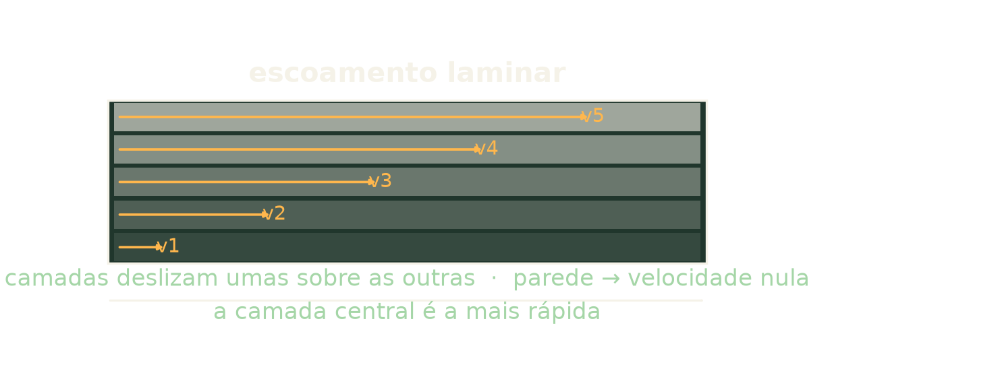
porque o mel escorre devagar,
enquanto a acetona evapora antes de você terminar de pipetá-la.
Os dois são líquidos. Ambos obedecem à mesma equação.
A diferença está numa única propriedade, a viscosidade,
a resistência que um fluido oferece ao escoamento.
Nesta prática, você vai medir essa resistência em sete líquidos,
usando um instrumento que não tem motor,
não tem sensor e não precisa de calibração absoluta.
O viscosímetro de Ostwald.
Apenas um tubo de vidro, um cronômetro e a força da gravidade.
O que é viscosidade
0:35 · 87s · 25 ações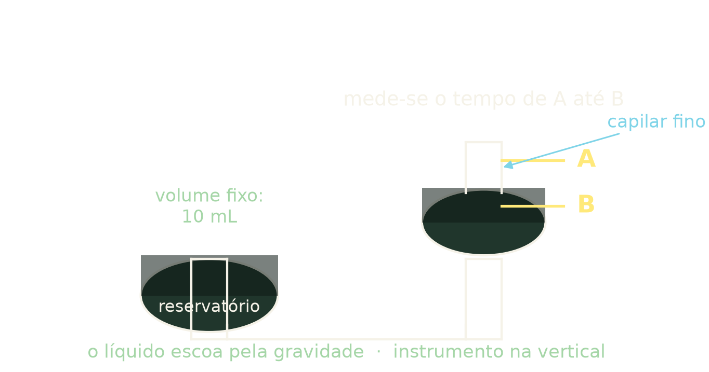
Comece imaginando o escoamento de um líquido como o deslizamento de lâminas paralelas.
A camada que encosta na parede fica praticamente parada.
A camada seguinte desliza sobre ela e assim por diante, até a camada central,
que é a mais rápida.
Cada camada arrasta a vizinha e é arrastada por ela.
Essa é a condição de escoamento laminar, e é ela que a lei de Poiseuille descreve.
A força que uma camada exerce sobre a outra é proporcional à área de contato e ao
gradiente de velocidade.
A constante de proporcionalidade é o coeficiente de viscosidade,
representado pela letra grega eta.
Quanto maior o eta, mais difícil é fazer o líquido escoar.
Vale fixar a ordem de grandeza, com valores a 25 graus Celsius.
A acetona tem viscosidade de 0,303 milipascal segundo, a água de 0,890,
quase 3 vezes maior.
Professor, deixa eu conferir: se eu meço só o tempo,
e o tempo depende também da densidade, então sozinho ele não me dá a viscosidade, certo?
Preciso da densidade pra fechar a conta.
E uma solução de sacarose a 40% em massa chega a 5,23, cerca de 6 vezes a da água.
A sacarose em água espessa o líquido de forma mensurável,
e é exatamente isso que esta prática vai quantificar.
O viscosímetro de Ostwald
2:02 · 57s · 16 açõesO viscosímetro de Ostwald é um tubo de vidro em forma de U, com dois bulbos.
O bulbo da esquerda é maior e fica na parte de baixo.
O da direita é menor e fica acima, conectado por um capilar fino.
Nas duas extremidades dos bulbos, existem marcas gravadas no vidro,
que vamos chamar de marca A, a superior, e marca B, a inferior.
O procedimento é este, você coloca um volume fixo de líquido no bulbo maior,
e o aspira, por sucção, até que o nível ultrapasse a marca A do bulbo menor.
Então, solta.
O líquido começa a escoar pelo capilar, empurrado pelo próprio peso.
Você cronometra o tempo que o menisco leva para ir da marca A até a marca B.
Repare no que aconteceu.
O tempo de escoamento não mede a viscosidade,
ele mede a viscosidade dividida pela densidade.
Isso é uma consequência direta da lei de Poiseuille, e é o ponto mais importante desta aula.
Por isso, vou mostrá-lo com cuidado agora.
Por que a pressão se cancela
2:59 · 126s · 29 ações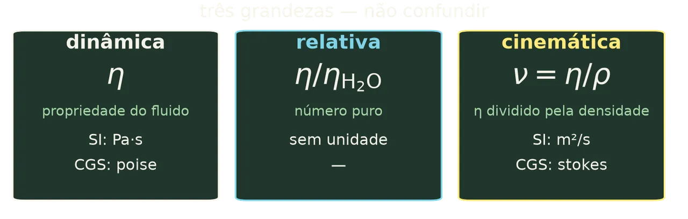
Pela lei de Poiseuille,
o coeficiente de viscosidade é dado por eta igual a π vezes r⁴ vezes t vezes P dividido
por 8 vezes V vezes L.
Nessa expressão, r é o raio interno do capilar, t é o tempo de escoamento,
V é o volume que escoa, L é o comprimento do capilar,
e P é a pressão que empurra o líquido.
Essa p é a pressão hidrostática, p igual a ρ vezes g vezes h, ou seja,
depende da densidade do próprio líquido e da altura da coluna.
Agora, o passo decisivo.
Se eu medir dois líquidos no mesmo instrumento com o mesmo volume,
então, o raio, o comprimento, o volume e a altura são idênticos nos dois casos.
Eles se cancelam quando eu divido uma equação pela outra, a gravidade também.
O que sobra é eta₁ sobre eta₂ é igual a ρ₁ vezes t₁ dividido por ρ₂ vezes t₂.
É por isso que o método é chamado relativo.
Ele não mede a viscosidade de um líquido isolado,
ele mede a viscosidade de um líquido em relação a outro.
E como a água tem viscosidade conhecida com grande precisão em qualquer temperatura,
nós a usamos como referência.
Então o aparelho não precisa ser calibrado em unidades absolutas.
A constante dele se cancela na razão. É isso que faz o Ostwald ser tão simples de usar.
E é também por isso que o volume de 10 mL precisa ser o mesmo em todas as determinações.
Se o volume mudar, a altura da coluna muda, a pressão muda e a igualdade deixa de valer.
Isso responde, inclusive, a uma das questões do seu relatório.
As três viscosidades e suas unidades
5:05 · 69s · 15 ações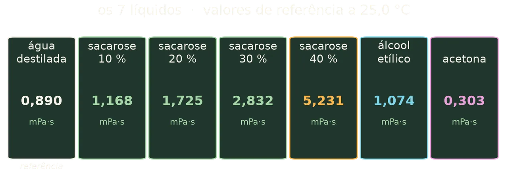
Antes de ir ao laboratório,
precisamos separar três grandezas que os livros costumam misturar.
A primeira é a viscosidade dinâmica, eta.
Ela é a propriedade do fluido e sua unidade no SI é o pascal-segundo.
No sistema CGS, a unidade é o poise.
Como um poise é grande, a prática usa o centipoise, e aqui está a conveniência histórica.
A viscosidade da água a 20°C vale aproximadamente 1 centipoise.
A segunda é a viscosidade relativa. É um número puro, sem unidade.
A razão entre a viscosidade do líquido e da água, na mesma temperatura.
É exatamente o que o Ostwald nos dá.
A terceira é a viscosidade cinemática, ni, definida como ni igual a eta dividido por rô.
Sua unidade no SI é o metro quadrado por segundo, e no CGS, o Stokes.
Note que o Ostwald mede diretamente uma quantidade proporcional à viscosidade cinemática.
Foi por isso que a densidade apareceu na nossa equação.
A experiência: os 7 líquidos
6:15 · 139s · 33 ações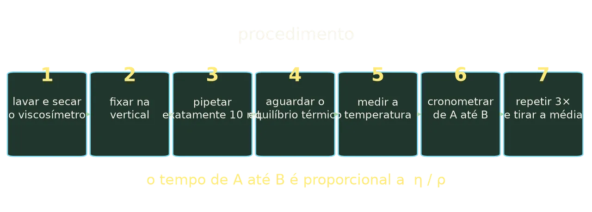
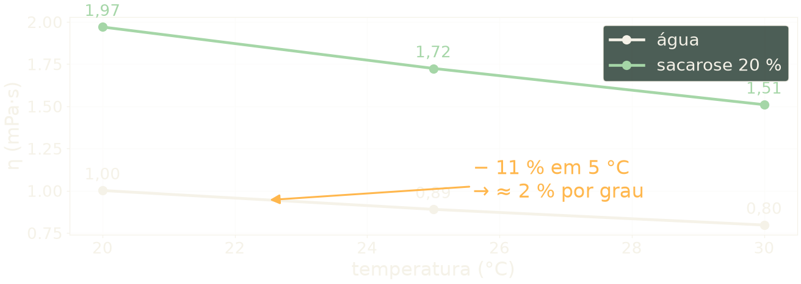
Vamos aos sete líquidos, água destilada, que é a referência,
e para cada um deles, quatro soluções de sacarose, a 10, 20, 30 e 40% em massa,
além do álcool etílico e da acetona.
O procedimento passo a passo.
Primeiro, lave o viscosímetro com água destilada e, se necessário,
com um pouco de acetona para acelerar a secagem.
Qualquer resíduo do líquido anterior contamina a medida seguinte.
Segundo, fixe o viscosímetro na posição vertical.
E o banho termostático não é enfeite, né?
Dois graus de diferença mexem mais no resultado do que qualquer erro de leitura do
cronômetro.
Se ele ficar inclinado,
a altura da coluna muda e a pressão hidrostática deixa de ser a mesma.
O método perde a validade.
Use um suporte com garra ou prenda o instrumento num banho termostático,
que resolve dois problemas de uma vez.
Terceiro, coloque exatamente 10 mililitros do líquido, medidos com pipeta volumétrica.
Quarto, aguarde o equilíbrio térmico.
Esse é o cuidado que mais afeta o resultado, e eu quero que você entenda por que.
A viscosidade da água cai de 1,002 milipascal segundo a 20 graus para 0,890 a 25 graus.
Uma variação de 5 graus derruba a viscosidade em cerca de 11%.
Para soluções concentradas de sacarose, a queda é ainda maior.
Ou seja, um erro de 1 grau na temperatura pode produzir um erro de 2% na viscosidade.
Não existe medida de viscosidade sem controle de temperatura.
Quinto, meça e anote a temperatura do banho.
Sexto, aspire o líquido até acima da marca A e deixe escoar.
Cronometre o intervalo entre a passagem do menisco por A e por B.
Sétimo, repita no mínimo três vezes e calcule a média.
Três medidas não são burocracia.
Elas permitem estimar o desvio e detectar uma bolha ou uma leitura perdida.
O cálculo com números reais
8:34 · 241s · 53 ações
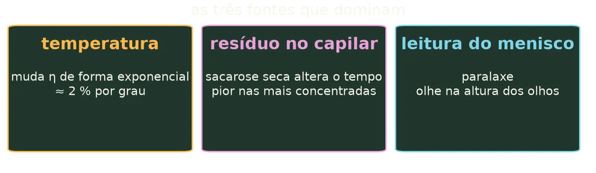
Vamos calcular juntos com números de um experimento típico.
Suponha que a água levou 60 segundos e o álcool etílico 92,1 segundos,
ambos a 25 graus Celsius.
As densidades, obtidas na prática de densimetria por picnometria,
foram zero vírgula nove nove sete zero cinco para a água e zero vírgula sete oito cinco
zero para o álcool,
em grama por centímetro cúbico. A água, a vinte e cinco graus,
vem da Tabela 1 do Experimento 01;
densidade de picnometria só vale se medida na mesma temperatura.
Aplicando a equação relativa. No numerador, a densidade do álcool vezes seu tempo:
zero vírgula sete oito cinco zero, vezes noventa e dois vírgula um,
que dá setenta e dois vírgula três. Já no denominador, a água vezes o tempo dela:
zero vírgula nove nove sete zero cinco, vezes sessenta,
que dá cinquenta e nove vírgula oito dois.
Dividindo, a viscosidade relativa é um vírgula vinte e um.
Agora, para obter a viscosidade dinâmica,
multiplicamos pela viscosidade da água na temperatura do experimento.
A vinte e cinco graus, a água vale zero vírgula oito nove zero milipascal segundo.
O manual manda calcular essa viscosidade em função da temperatura,
pela equação três ponto quatro: eta da água é igual a cinco vírgula nove oito cinco,
dividido por quarenta e três vírgula vinte e cinco mais tê,
elevado a um vírgula cinco quatro dois, em poise, com tê em graus Celsius.
A vinte e cinco graus dá zero vírgula oito nove.
Então a viscosidade do álcool é um vírgula vinte e um,
vezes zero vírgula oito nove zero, que dá um vírgula zero sete seis milipascal segundo.
Essa régua de critério ajuda.
Eu achava que tinha que acertar o valor de tabela exatamente,
e até cinco por cento já é excelente.
O valor de referência tabelado para o etanol a vinte e cinco graus é um vírgula zero sete
quatro.
O nosso resultado, um vírgula zero sete seis,
desvia desse valor em zero vírgula quinze por cento: um acordo pequeno,
porque eu escolhi um exemplo em que o método funciona bem. No seu relatório,
os desvios virão.
Repare numa coisa importante.
Para a acetona, a densidade é menor que a da água,
e o tempo também é bem menor.
O produto densidade vezes tempo é muito pequeno,
e a viscosidade relativa fica em torno de 0,34.
Para a solução de sacarose a 40%, ocorre o contrário.
A densidade é maior e o tempo de escoamento chega a ser cerca de 5 vezes o da água.
A viscosidade relativa vai a aproximadamente 5,88.
Essa é a leitura física da experiência.
A sacarose em água aumenta a viscosidade porque as moléculas de açúcar
criam pontes de hidrogênio com a água e entre si,
formando uma rede que dificulta o deslizamento das camadas.
Quanto mais concentrada a solução, mais densa essa rede.
Erros e critério de qualidade
12:35 · 80s · 24 ações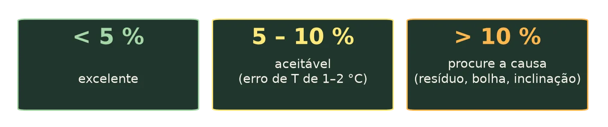
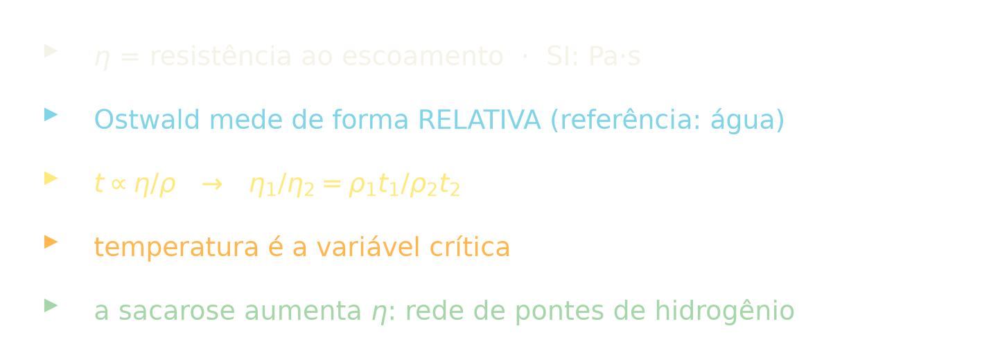
Três fontes de erro dominam esta prática.
A temperatura, como já vimos, é a principal.
Ela muda a viscosidade de forma exponencial.
Termostatize e meça a temperatura sempre.
A limpeza do capilar é a segunda.
Uma película de sacarose seca dentro de um capilar fino
altera o tempo de escoamento de forma significativa,
e o efeito é maior justamente nas soluções mais concentradas.
A leitura do menisco é a terceira.
Olhe sempre na altura dos olhos, com o fundo claro, para evitar erro de paralaxe.
Para julgar o resultado, use este critério.
Compare a viscosidade que você mediu com o valor de referência
e calcule o desvio percentual.
Se o desvio ficar abaixo de um 5%, sua medida está excelente.
Entre 5 e 10, aceitável, provavelmente há um erro de temperatura de 1 ou 2 graus.
Acima de 10%, procure a causa antes de concluir que o método falhou.
Vou começar o pré-relatório pela dedução da equação relativa.
Acho que é ali que eu vou entender o método de verdade.
Quase sempre é resíduo, bolha ou inclinação do instrumento.
E registre sempre as unidades.
Uma viscosidade sem unidade não é um resultado, é um número.
Fechamento e pré-relatório
13:55 · 67s · 17 açõesVamos recapitular o essencial de hoje.
A viscosidade é a resistência ao escoamento
e sua unidade no SI é o pascal-segundo.
O viscosímetro de Ostwald mede essa viscosidade de forma relativa
comparando o líquido com a água.
O tempo de escoamento é proporcional à viscosidade dividida pela densidade.
A razão entre as viscosidades de dois líquidos no mesmo instrumento
se reduz à densidade vezes tempo sobre densidade vezes tempo
com a pressão hidrostática desaparecendo do cálculo.
E a temperatura é a variável que você não pode deixar de controlar.
Para a próxima aula, prepare o pré-relatório: são as sete questões do roteiro,
incluindo a dedução da equação relativa a partir da lei de Poiseuille.
Essa dedução é o coração da prática,
e quem faz essa dedução com as próprias mãos entende o método de verdade.
Até a próxima!